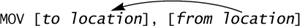
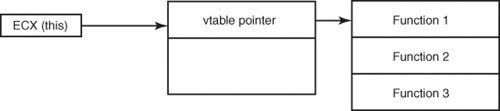

{% include JB/setup %}
{% raw %}
<div>
<a name="toppage" class="pcalibre calibre1"></a><table width="100%" border="0" cellspacing="0" cellpadding="0" class="sfbody"><tr valign="top" class="calibre2"><td class="calibre3"><a name="MainContent" class="pcalibre calibre1"></a><table width="95%" class="sfbody"><tr class="calibre2"><td class="pcalibre1 v"><!--Copyright (c) 2002 Safari Tech Books Online--><table width="100%" border="0" cellspacing="0" cellpadding="2" class="calibre4"><tr class="calibre2"><td valign="middle" class="v1 pcalibre1" height="5"></td></tr><tr class="calibre2"><td valign="middle" class="v1 pcalibre1"><table cellpadding="0" cellspacing="0" border="0" width="100%" class="calibre4"><tr class="calibre2"><td class="calibre6"><span class="calibre7"> </span>
                   
                  <span class="calibre7">   </span>
             <span class="calibre7"> </span></td></tr></table></td><td class="calibre8"/><td valign="middle" class="v2 pcalibre1"><a href="10061538.html" class="pcalibre calibre1"></a> 
           
          <span class="calibre7"><a target="_self" href="ch08lev1sec1.html" title="Previous section" class="pcalibre calibre1"></a></span>
				
				 
				
				<span class="calibre7"><a target="_self" href="ch08lev1sec3.html" title="Next section" class="pcalibre calibre1"></a></span></td></tr></table><div id="section" class="calibre15"><table width="100%" border="0" cellspacing="0" cellpadding="0" class="calibre4"><tr class="calibre2"><td valign="top" class="calibre8">Security Game Programming Networking Programming Greg Hoglund Gary McGraw Addison Wesley Professional Exploiting Online Games: Cheating Massively Distributed Systems<a name="ch08lev1sec2" class="pcalibre calibre1"></a>
<h3 id="title-IDAXZTZO" class="docSection1Title">Code Patterns in Assembly</h3>
<p class="docText">Reading code effectively requires an understanding of assembly language; you can find reference manuals all over the Net. There are also several really good books on assembly language, such as <span class="docEmphasis">Professional Assembly Language</span> by Richard Blum (Wrox, 2005), <span class="docEmphasis">Hacker Disassembling Uncovered</span> by Kris Kaspersky (A-List Publishing, 2003), and <span class="docEmphasis">Reversing: Secrets of Reverse Engineering</span> by Eldad Eilam (Wiley, 2005).</p>
<p class="docText">Assembly language is not hard to understand; in fact, it's very simple. Each instruction does something very simple and very basic, such as move a byte of data from one place to another. The problem is, ironically, that it's <span class="docEmphasis">too simple</span>. Due to the inane simplicity, it takes tens or even hundreds of assembly instructions to equal a single statement in a higher-level programming language like Python.</p>
<p class="docText"><a name="iddle1245" class="pcalibre calibre1"></a>An easy-to-understand high-level statement such as:</p>
<div class="docText1"><pre class="calibre43">PRINT "You have 30 hitpoints left"
</pre></div><br class="calibre15"/>
<p class="docText">may translate to over a thousand individual assembly language instructions! The reason is that high-level languages are designed to mask most of the underlying machine-level detail so that programmers can get more work done in less time. Before there were good high-level languages and compilers, programmers had to hand-code all of their programs using assembly language (or the native equivalent for the computer being used), and before that programmers had to code the binary 1s and 0s directly.</p>
<p class="docText">Many people are intimidated by disassembly due to the sheer volume of instructions and perceived lack of high-level structure, but this is because they haven't thought about how to find code patterns. The trick to reverse engineering code is to learn how to identify code patterns visually. Compilers convert high-level statements into predictable sets of assembly language, each of which has an obvious pattern.</p>
<p class="docText">This statement:</p>
<div class="docText1"><pre class="calibre43">if(somevar == 0)
{
       //do something
}
// after
</pre></div><br class="calibre15"/>
<p class="docText">almost always translates to the following assembly language:</p>
<div class="docText1"><pre class="calibre43">mov eax, somevar
test eax, eax
jnz  after
// do something
...

// after
</pre></div><br class="calibre15"/>
<p class="docText">Using simple pattern recognition like this, you can perform the translation back to higher-level pseudo-C code simply by finding the pattern and assuming it equates back to the higher-level statement.</p>
<p class="docText">In this section, we cover several important patterns that C and C++ compilers typically use. We're going to stick to x86 assembly since the x86 is the most common platform in wide use today. Obviously this approach is C-centric (ignoring myriad other languages that yield the same kinds of <a name="iddle1029" class="pcalibre calibre1"></a><a name="iddle1487" class="pcalibre calibre1"></a><a name="iddle1627" class="pcalibre calibre1"></a><a name="iddle1774" class="pcalibre calibre1"></a><a name="iddle1915" class="pcalibre calibre1"></a><a name="iddle1979" class="pcalibre calibre1"></a><a name="iddle1980" class="pcalibre calibre1"></a><a name="iddle2010" class="pcalibre calibre1"></a><a name="iddle2014" class="pcalibre calibre1"></a>assembly constructs), but most games are written in C/C++, so this should give you a good basic start. Be forewarned of things to come, however—the outer-space MMO <span class="docEmphasis">EVE Online</span> uses compiled Python!</p>
<p class="docText">In the following material, we take the liberty of assuming that you have some additional assembly language resources available and that you're already familiar with the x86 processor, basic registers, how the stack works, and so on.</p>
<a name="ch08lev2sec6" class="pcalibre calibre1"></a>
<h4 id="title-IDAX4TZO" class="docSection2Title">Basic Data Movement</h4>
<p class="docText">Computers do two very basic things: they perform arithmetic on data, and they move data around. Moving data is fairly straightforward with assembly language. The <tt class="calibre38">MOV</tt> instruction reads data from one location and puts it in another. If a <tt class="calibre38">MOV</tt> is inside a loop, you can move whole arrays of things. In our notation, the <tt class="calibre38">MOV</tt> syntax is as follows:</p>
<p class="docText">
</p>
<p class="docText">This is sometimes called <span class="docEmphasis">Intel notation</span>. The first operand is the target of the data move, and the second operand is the source. There are many variations of the <tt class="calibre38">MOV</tt> instruction.</p>
<ul class="calibre18"><li class="calibre19"><p class="docText"><tt class="calibre38">MOV EAX, EBX</tt></p><p class="docText">This moves stuff from one register into another (from <tt class="calibre38">EBX</tt> into <tt class="calibre38">EAX</tt>). The right way to say this is "<tt class="calibre38">EAX</tt> gets <tt class="calibre38">EBX</tt>."</p></li><li class="calibre19"><p class="docText"><tt class="calibre38">MOV EAX, [EBX]</tt> (indirection)</p><p class="docText">This moves something from memory to a register. Here, <tt class="calibre38">EBX</tt> holds a pointer to somewhere in memory, and whatever is out there in memory is put into <tt class="calibre38">EAX</tt>. <tt class="calibre38">EBX</tt> is not affected in any way. The right way to say this is "<tt class="calibre38">EAX</tt> gets indirection <tt class="calibre38">EBX</tt>."</p></li><li class="calibre19"><p class="docText"><tt class="calibre38">MOV EAX, [EBP + 10]</tt> (argument)</p><p class="docText">In this example, <tt class="calibre38">EBP</tt> is the pointer, and we add 10 to the pointer address before we grab whatever is out there in memory. <tt class="calibre38">EBP</tt> remains unaffected; the + 10 is only temporary for this operation. The right way to say this is "<tt class="calibre38">EAX</tt> gets indirection of <tt class="calibre38">EBP</tt> plus ten." If we are in a function, anything pointed to as "<tt class="calibre38">EBP</tt> plus something" is usually an argument to the function.</p></li><li class="calibre19"><p class="docText"><tt class="calibre38">MOV EAX, [EBP – 10]</tt> (local variable)</p><p class="docText">Same as above, except this time <tt class="calibre38">EAX</tt> gets indirection of <tt class="calibre38">EBP</tt> minus ten. If we are in a function, <tt class="calibre38">EBP</tt> minus anything usually means a local variable.</p></li><li class="calibre19"><p class="docText"><a name="iddle1579" class="pcalibre calibre1"></a><a name="iddle1642" class="pcalibre calibre1"></a><a name="iddle1981" class="pcalibre calibre1"></a><a name="iddle2007" class="pcalibre calibre1"></a><a name="iddle2011" class="pcalibre calibre1"></a><tt class="calibre38">LEA EAX, [EBP + 10]</tt> (taking a pointer)</p><p class="docText">This instruction is special, the <tt class="calibre38">LEA</tt> (pronounced "lee-ah" and short for "load effective address") is used to take the address of some object. Even though the brackets are used, the pointer in <tt class="calibre38">EBP</tt> is not actually dereferenced. In this case, <tt class="calibre38">EAX</tt> gets the value that is in <tt class="calibre38">EBP</tt> plus ten. It's equivalent to:</p><div class="docText1"><pre class="calibre43">MOV EAX, EBP
ADD EAX, 10
</pre></div><p class="docText">That means <tt class="calibre38">EAX</tt> ends up pointing to the variable on the stack, a concept used all the time when passing arguments to subroutines. It's equivalent to taking a reference in C/C++:</p><div class="docText1"><pre class="calibre43">int *pInt;
int some_int = 0;
pInt = &amp;some_int;
</pre></div><p class="docText">In this case, <tt class="calibre38">LEA</tt> might be used to initialize <tt class="calibre38">pInt</tt>.</p></li></ul>
<a name="ch08lev3sec1" class="pcalibre calibre1"></a>
<h5 id="title-IDA0EUZO" class="docSection3Title">Global Values</h5>
<p class="docText">Global values are stored independent of the subroutines, typically in a special <tt class="calibre38">data</tt> section. These values can be set prior to program execution, or they might vary while the program runs. In either case, it's easy to spot the use of a global value. For example, the following string exists in <tt class="calibre38">WoW.exe</tt>:</p>
<div class="docText1"><pre class="calibre43">.data:0083B7D8 'SPELL_FAILED_ALREADY_AT_FULL_POWER',0
</pre></div><br class="calibre15"/>
<p class="docText">The string is referenced at the following code location:</p>
<div class="docText1"><pre class="calibre43">.text:006D4D92  mov     eax, 83B7D8h
.text:006D4D97  retn
</pre></div><br class="calibre15"/>
<p class="docText">You can see that the global value is referenced through its address. Examining the address clearly shows an ASCII string that says <tt class="calibre38">SPELL_FAILED_ ALREADY_AT_FULL_POWER</tt>.</p>
<p class="docText">We cover a bit more about data movement in the Parsing and Strings subsection.</p>
<a name="ch08lev2sec7" class="pcalibre calibre1"></a>
<h4 id="title-IDAFGUZO" class="docSection2Title">Basic Logic</h4>
<p class="docText">Basic logic involves the comparison of values and, depending on what the value is, branching this way or that. Combined with arithmetic, this is the basis of all standard computation.</p>
<a name="ch08lev3sec2" class="pcalibre calibre1"></a>
<h5 id="title-IDASGUZO" class="docSection3Title">Compare Operations</h5>
<p class="docText"><a name="iddle1205" class="pcalibre calibre1"></a><a name="iddle1298" class="pcalibre calibre1"></a><a name="iddle1304" class="pcalibre calibre1"></a><a name="iddle1983" class="pcalibre calibre1"></a><a name="iddle1987" class="pcalibre calibre1"></a><a name="iddle1988" class="pcalibre calibre1"></a><a name="iddle2023" class="pcalibre calibre1"></a><a name="iddle2136" class="pcalibre calibre1"></a>In a typical compare operation, two values are compared against one another. The values are usually stored in registers, although sometimes one of the values exists in program memory. The result of a compare controls any conditional branches that occur just afterward. Thus, compares are used for higher-level statements such as <tt class="calibre38">if</tt> and <tt class="calibre38">while</tt>. Here are some examples of compares:</p>
<ul class="calibre18"><li class="calibre19"><p class="docText"><tt class="calibre38">CMP eax, ebx</tt></p></li><li class="calibre19"><p class="docText"><tt class="calibre38">CMP [eax], ebx</tt></p></li><li class="calibre19"><p class="docText"><tt class="calibre38">CMP al, 3Ch</tt></p></li><li class="calibre19"><p class="docText"><tt class="calibre38">TEST eax, eax</tt></p></li></ul>
<p class="docText">The function <tt class="calibre38">CMP</tt> (compare) is interesting because it is the same as <tt class="calibre38">SUB</tt> (subtract) but does not store the result. It subtracts the two operands, and if the result is zero, the compare is <tt class="calibre38">TRue</tt>. We include <tt class="calibre38">TEST</tt> also because <tt class="calibre38">TEST</tt> is often used to compare a value against zero. This occurs many times after function calls, when the return value is checked against <tt class="calibre38">NULL</tt> or zero.</p>
<a name="ch08lev3sec3" class="pcalibre calibre1"></a>
<h5 id="title-IDAKKUZO" class="docSection3Title"><tt class="calibre38">TEST</tt> Operations</h5>
<p class="docText">Like <tt class="calibre38">CMP</tt>'s relationship with <tt class="calibre38">SUB</tt>, <tt class="calibre38">TEST</tt> is the same as <tt class="calibre38">AND</tt>, but it does not store the result. <tt class="calibre38">TEST</tt> also controls conditional branches that follow it.</p>
<p class="docText"><tt class="calibre38">TEST</tt> is often used to test for a zero result after a function returns, for example:</p>
<div class="docText1"><pre class="calibre43">CALL some_function
TEST EAX, EAX
JZ somewhere
</pre></div><br class="calibre15"/>
<p class="docText">is equivalent to:</p>
<div class="docText1"><pre class="calibre43">result = some_function();
if(result)
{
  // do something
}
</pre></div><br class="calibre15"/>
<p class="docText">Function calls on Wintel (Windows on Intel) typically store the return value in the <tt class="calibre38">EAX</tt> register. This is why you see the <tt class="calibre38">CMP</tt> and <tt class="calibre38">TEST</tt> instructions operating on <tt class="calibre38">EAX</tt> after a call returns.</p>
<p class="docText"><a name="iddle1114" class="pcalibre calibre1"></a><a name="iddle1439" class="pcalibre calibre1"></a><a name="iddle1982" class="pcalibre calibre1"></a><a name="iddle2024" class="pcalibre calibre1"></a><a name="iddle2185" class="pcalibre calibre1"></a>As we noted, both <tt class="calibre38">CMP</tt> and <tt class="calibre38">TEST</tt> control branching operations. They do this by affecting the <tt class="calibre38">FLAGS</tt> register. The <tt class="calibre38">FLAGS</tt> register has several bits that record whether an arithmetic operation overflows, results in zero, or has to carry. Conditional branches examine the <tt class="calibre38">FLAGS</tt> register to determine how to branch.</p>
<ul class="calibre18"><li class="calibre19"><p class="docText"><tt class="calibre38">TEST</tt> affects the following bits in the <tt class="calibre38">FLAGS</tt> register:</p><blockquote class="calibre24"><p class="calibre28"></p><p class="docText">Sign flag (<tt class="calibre38">SF</tt>)</p><p class="calibre28"></p><p class="docText">Zero flag (<tt class="calibre38">ZF</tt>)</p><p class="calibre28"></p><p class="docText">Parity flag (<tt class="calibre38">PF</tt>)</p></blockquote></li><li class="calibre19"><p class="docText"><tt class="calibre38">CMP</tt> affects the following:</p><blockquote class="calibre24"><p class="calibre28"></p><p class="docText">Zero flag (<tt class="calibre38">ZF</tt>)</p><p class="calibre28"></p><p class="docText">Overflow flag (<tt class="calibre38">OF</tt>)</p><p class="calibre28"></p><p class="docText">Sign flag (<tt class="calibre38">SF</tt>)</p><p class="calibre28"></p><p class="docText">Carry flag (<tt class="calibre38">CF</tt>)</p></blockquote></li></ul>
<p class="docText">If the <tt class="calibre38">ZF</tt> flag is set (<tt class="calibre38">ZF</tt> = 1), it means the two operands were equal. If <tt class="calibre38">ZF</tt> is <span class="docEmphasis">not</span> set, the operands were <span class="docEmphasis">not</span> equal. If the operands are not equal, the overflow flag (<tt class="calibre38">OF</tt>), sign flag (<tt class="calibre38">SF</tt>), and carry flag (<tt class="calibre38">CF</tt>) can tell you which of the operands was larger.</p>
<a name="ch08lev3sec4" class="pcalibre calibre1"></a>
<h5 id="title-IDAQQUZO" class="docSection3Title">True/False Test on a Function Call</h5>
<p class="docText">Many times a program will check a Boolean variable—a variable that stores <tt class="calibre38">TRUE</tt> or <tt class="calibre38">FALSE</tt>. Sometimes a function will return a <tt class="calibre38">BOOL</tt> result. For example, we can use the function <tt class="calibre38">Ellipse</tt> to draw an ellipse on the screen in Windows programs.</p>
<p class="docText">The function is documented in MSDN &lt;<a class="pcalibre6 pcalibre5 calibre1" target="_blank" href="http://msdn2.microsoft.com/en-us/default.aspx">http://msdn2.microsoft.com/en-us/default.aspx</a>&gt; as follows:</p>
<a name="ch08sb01" class="pcalibre calibre1"></a><p class="calibre28"><table cellspacing="0" width="90%" border="1" cellpadding="5" class="calibre4"><tr class="calibre2"><td class="calibre8">
<p class="docText">The <span class="calibre11">Ellipse</span> function draws an ellipse. The center of the ellipse is the center of the specified bounding rectangle. The ellipse is outlined by using the current pen and is filled by using the current brush.</p>
<div class="docText1"><pre class="calibre43"><span class="calibre11">BOOL Ellipse(</span>
<span class="calibre11">HDC</span> <span class="docEmphasis">hdc,</span>           //handle to DC
 <span class="calibre11">int</span> <span class="docEmphasis">nLeftRect,</span>     //x-coord of upper-left corner of rectangle
 <span class="calibre11">int</span> <span class="docEmphasis">nTopRect,</span>      //y-coord of upper-left corner of rectangle
 <span class="calibre11">int</span> <span class="docEmphasis">nRightRect,</span>    //x-coord of lower-right corner of rectangle
 <span class="calibre11">int</span> <span class="docEmphasis">nBottomRect</span>    //y-coord of lower-right corner of rectangle
<span class="calibre11">);</span>
</pre></div><br class="calibre15"/>
<a name="ch08sb01div01lev1sec1" class="pcalibre calibre1"></a>
<h2 class="docSidebarTitle">Return Values</h2>
<p class="docText">If the function succeeds, the return value is nonzero.</p>
<p class="docText">If the function fails, the return value is zero.</p>
</td></tr></table></p><br class="calibre15"/>
<p class="docText">As we can see, the return value is <tt class="calibre38">BOOL</tt>. A programmer might want to check the return value from this function to see whether it succeeded or not.</p>
<p class="docText">A check such as this will look like this:</p>
<div class="docText1"><pre class="calibre43">if( FALSE == Ellipse( hdc, r1, r2, r3, r4 ))
{
      // error
}
</pre></div><br class="calibre15"/>
<p class="docText">In assembly language, the check will go something like this:</p>
<div class="docText1"><pre class="calibre43">mov    edx, [ebp-r4]
push   edx
mov    edx, [ebp-r3]
push   edx
mov    edx, [ebp-r2]
push   edx
mov    edx, [ebp-r1]
push   edx
mov    edx, [ebp-hdc]
push   edx
call   Ellipse
add    esp, 4
movzx  eax, al
test   eax, eax
jz     short loc_401128
mov    ecx, [ebp-var_8]
</pre></div><br class="calibre15"/>
<p class="docText">There are several interesting things going on in this code block. First, all of the arguments for the function call <tt class="calibre38">Ellipse</tt> are pushed onto the stack. Notice that they are pushed in reverse order—that is, the first argument to <tt class="calibre38">Ellipse</tt> (<tt class="calibre38">hdc</tt>) is pushed last. This leaves <tt class="calibre38">hdc</tt> as the topmost item on the stack. So, we can see how arguments are passed to functions—on the stack. This is one of the first patterns we learn when starting to think about reversing. When we see <tt class="calibre38">push</tt>, <tt class="calibre38">push</tt>, <tt class="calibre38">push</tt>, followed by a <tt class="calibre38">call</tt>, we know the pushes are referencing the arguments to the function.</p>
<p class="docText">Notice how the values being pushed onto the stack are first moved into a register. This is required for the push to work, but notice how the values are being pulled from locations in memory [<tt class="calibre38">ebp +</tt>/<tt class="calibre38">-</tt> this or that]. The operand using <tt class="calibre38">EBP</tt> is a common pattern. <tt class="calibre38">EBP</tt> is called the <span class="docEmphasis">base pointer</span> for a reason—it points to the base of a stack frame, a set-aside region of the stack used for the current function. When you see <tt class="calibre38">EBP</tt>, you know that the variables being used are on the stack, and they are local variables defined in the current function, or sometimes, arguments that were passed into the current function. In our example, we know that the rectangle data and the display context handle are stored in local variables. This would mean the function we're reverse engineering looks something like this:</p>
<div class="docText1"><pre class="calibre43">SomeReturnType SomeFunction( SomeNumberOfArguments )
{
       int r1, r2, r3, r4;
       HDC hdc;
       ...
       if( FALSE == Ellipse( hdc, r1, r2, r3, r4 ))
       {
         // error
       }
       ...
}
</pre></div><br class="calibre15"/>
<p class="docText">By revealing only a few assembly instructions, we have already learned a great deal about the current function. Next, after the arguments are pushed, there is a call to <tt class="calibre38">Ellipse</tt>, which after completion stores its return value in <tt class="calibre38">EAX</tt>. We then see that <tt class="calibre38">AL</tt> is moved into <tt class="calibre38">EAX</tt>—this seems odd, and it's another pattern we look for.</p>
<p class="docText">This operation:</p>
<div class="docText1"><pre class="calibre43">movzx  eax, al
</pre></div><br class="calibre15"/>
<p class="docText">is often used when <tt class="calibre38">EAX</tt> actually contains a <tt class="calibre38">BOOL</tt> value. Using patterns, we now know that the <tt class="calibre38">Ellipse</tt> call returns a <tt class="calibre38">BOOL</tt>. Of course, we already showed you the documentation for <tt class="calibre38">Ellipse</tt>, so you already knew it was of type <tt class="calibre38">BOOL</tt>. But assume that you didn't know anything about the <tt class="calibre38">Ellipse</tt> call—assume that it was an internal call built by the game developers—this pattern would have helped you reverse engineer the return type of the function. That is what this exercise is all about.</p>
<a name="ch08lev3sec5" class="pcalibre calibre1"></a>
<h5 id="title-IDAIXUZO" class="docSection3Title">Branching Operation: <tt class="calibre38">if</tt></h5>
<p class="docText"><a name="iddle1206" class="pcalibre calibre1"></a><a name="iddle1616" class="pcalibre calibre1"></a><a name="iddle1617" class="pcalibre calibre1"></a><a name="iddle1984" class="pcalibre calibre1"></a><a name="iddle2008" class="pcalibre calibre1"></a><a name="iddle2009" class="pcalibre calibre1"></a>We already covered comparison operations, so let's explore how higher-level branches translate down into comparisons and jumps. <tt class="calibre38">if</tt> is a common high-level branch statement. It might be used to check the value of some variable:</p>
<div class="docText1"><pre class="calibre43">if(somevar == 0)
{
  //do something
}
// after
</pre></div><br class="calibre15"/>
<p class="docText">The statement above translates to the following assembly language:</p>
<div class="docText1"><pre class="calibre43">mov eax, somevar
test eax, eax
jnz after
// something
...

// after
</pre></div><br class="calibre15"/>
<p class="docText">Here we can see that the variable to be compared is first moved into a register. Earlier we saw something similar when we explored the <tt class="calibre38">PUSH</tt> instruction. Many instructions require that values be present in registers, as opposed to program memory. In this case, <tt class="calibre38">somevar</tt> is first moved into a register, and then it is checked for zero using the <tt class="calibre38">TEST</tt> instruction. <tt class="calibre38">JNZ</tt> means "jump if not zero"—so we jump to the <tt class="calibre38">after</tt> block if the variable is nonzero, or we fall through to the <tt class="calibre38">something</tt> block if the variable is zero.</p>
<p class="docText">Notice how the <tt class="calibre38">jump</tt> instruction is opposite of the <tt class="calibre38">if</tt> statement? The <tt class="calibre38">if</tt> statement is "if <span class="docEmphasis">equal</span>" but the <tt class="calibre38">JNZ</tt> is "jump if <span class="docEmphasis">not</span> equal." The <tt class="calibre38">jump</tt> instruction tends to be the opposite of whatever is in the <tt class="calibre38">if</tt> statement, but this makes perfect logical sense if you examine how the branches work. So, for <tt class="calibre38">JNZ</tt> think <tt class="calibre38">if( something == something2 )</tt> and for <tt class="calibre38">JZ</tt> think <tt class="calibre38">if( something != something2)</tt>.</p>
<a name="ch08lev3sec6" class="pcalibre calibre1"></a>
<h5 id="title-IDAJ1UZO" class="docSection3Title">Branching Operation: <tt class="calibre38">if else</tt></h5>
<p class="docText">Another common statement is to combine <tt class="calibre38">if</tt>
with a follow-up <tt class="calibre38">else</tt>. The code would look something like this:</p>
<div class="docText1"><pre class="calibre43">if(somevar == 1234)
{
  //do something 1
}
else
{
  //do something 2
}
// after
</pre></div><br class="calibre15"/>
<p class="docText">The code above will assemble into something close to this:</p>
<div class="docText1"><pre class="calibre43">mov eax, somevar
cmp eax, 1234
jnz something_2
// something_1
...
jmp after
// something_2
...
// after
</pre></div><br class="calibre15"/>
<p class="docText">Unlike the code in our first <tt class="calibre38">if</tt> example, this code has two different blocks that can execute depending on the comparison's result. The key pattern to notice is the unconditional jump in the <tt class="calibre38">something_1</tt> block. The <tt class="calibre38">JMP after</tt> must be there so the execution doesn't fall through into the <tt class="calibre38">something_2</tt> block. This keeps the two blocks separated from one another. When you see the unconditional, you are tipped off that an <tt class="calibre38">else</tt> block is present with the normal <tt class="calibre38">if</tt>.</p>
<p class="docText">Sometimes the <tt class="calibre38">else</tt> block will also have an additional comparison. The code might look like this:</p>
<div class="docText1"><pre class="calibre43">if(somevar == 1234)
{
  //do something 1
}
else if(somevar == 5555)
{
  //do something 2
}
// after
</pre></div><br class="calibre15"/>
<p class="docText">In this case, the assembly will go something like this:</p>
<div class="docText1"><pre class="calibre43">mov eax, somevar
cmp eax, 1234
jnz something_2
// something_1
...
jmp after
// something_2
cmp eax, 5555
jnz after
...
// after
</pre></div><br class="calibre15"/>
<p class="docText"><a name="iddle1659" class="pcalibre calibre1"></a><a name="iddle2012" class="pcalibre calibre1"></a>The only difference now is that the <tt class="calibre38">something_2</tt> block has an additional <tt class="calibre38">CMP</tt> and branch so that the <tt class="calibre38">something_2</tt> block won't continue executing if the variable is not 5555. The pattern here is the second <tt class="calibre38">CMP</tt> occurring after the <tt class="calibre38">something_2</tt>.</p>
<a name="ch08lev3sec7" class="pcalibre calibre1"></a>
<h5 id="title-IDAS4UZO" class="docSection3Title">Logical Operators</h5>
<p class="docText">Logical operators (AND, OR, and so on) are used all the time in code to control branching operations. For example, here's a use of the AND operator:</p>
<div class="docText1"><pre class="calibre43">if(somevar == 7 &amp;&amp; somevar == 42)
{
  //do something 1
}
// after
</pre></div><br class="calibre15"/>
<p class="docText">This is similar to the <tt class="calibre38">if</tt> statement we already explored, except that now we include two variables instead of one. The branching logic is almost the same, having only one additional compare.</p>
<div class="docText1"><pre class="calibre43">mov eax, somevar
cmp eax, 7
jnz after
cmp eax, 42
jnz after
// something_1
...
// after (aka "bail out")
</pre></div><br class="calibre15"/>
<p class="docText">Note how all of the compares are done up front, with any failing match bailing out to the <tt class="calibre38">after</tt> block—no hard jumps used. All of the jumps are <tt class="calibre38">JNZ</tt>.</p>
<p class="docText">With an OR operator, the code is only slightly altered:</p>
<div class="docText1"><pre class="calibre43">if(somevar == 7 || somevar == 42)
{
  //do something 1
}
// after
</pre></div><br class="calibre15"/>
<p class="docText">And the assembly looks something like this:</p>
<div class="docText1"><pre class="calibre43">mov eax, somevar
cmp eax, 7
jz something_1
cmp eax, 42
jz something_1
jmp after
// something_1
...
// after (aka "bail out")
</pre></div><br class="calibre15"/>
<p class="docText">Just like the AND example, note how all the compares are done up front with a hard jump to the "bail out" at the end. In this case, <tt class="calibre38">JZ</tt> is used instead of <tt class="calibre38">JNZ</tt>.</p>
<p class="docText">In any set of compares such as the following:</p>
<div class="docText1"><pre class="calibre43">if( something &amp;&amp; something || something )
{
  // do something
}
// bail out to here
</pre></div><br class="calibre15"/>
<p class="docText">there will be a bailout block after the <tt class="calibre38">if{ }</tt> block. Any jump to the bailout block should be reversed to recover the operation.</p>
<ul class="calibre18"><li class="calibre19"><p class="docText"><tt class="calibre38">JNZ</tt> to bailout block means <tt class="calibre38">if( A == B )</tt>.</p></li><li class="calibre19"><p class="docText"><tt class="calibre38">JZ</tt> to bailout block means <tt class="calibre38">if( A != B )</tt>.</p></li></ul>
<p class="docText">As we discussed earlier, the jump type is usually the opposite of that of the higher-level statement.</p>
<a name="ch08lev2sec8" class="pcalibre calibre1"></a>
<h4 id="title-IDADCVZO" class="docSection2Title">Parsing and Strings</h4>
<a name="ch08lev3sec8" class="pcalibre calibre1"></a>
<h5 id="title-IDAMCVZO" class="docSection3Title">Looping and Incrementing Pointers</h5>
<p class="docText"><a name="iddle1660" class="pcalibre calibre1"></a><a name="iddle1813" class="pcalibre calibre1"></a><a name="iddle1862" class="pcalibre calibre1"></a><a name="iddle2013" class="pcalibre calibre1"></a><a name="iddle2015" class="pcalibre calibre1"></a><a name="iddle2018" class="pcalibre calibre1"></a><a name="iddle2112" class="pcalibre calibre1"></a>Pointers are used for all kinds of things: pointers to structures, functions, or strings of data. Whenever there's an array of objects, a pointer is typically used to iterate through those items. A good example of this is a string, which is actually an array of bytes. If the code were scanning through a string looking for a particular character, you might find disassembly such as:</p>
<div class="docText1"><pre class="calibre43">mov    edx, [ebp+var_4]
add    edx, 1
mov    [ebp+var_4], edx
</pre></div><br class="calibre15"/>
<p class="docText">Here we see a value stored in a local variable (remember <tt class="calibre38">EBP</tt>). The value is loaded into a register, incremented by 1, and put back into the register. This value could be anything: a counter, an index into an array, or an actual byte pointer.</p>
<p class="docText">If there were a string in memory and it was being copied from one location to another, a loop might be used. Inline string copies are very common. A string may also be scanned for a certain character using a loop. Small loops can always be found in code, and if they contain pointer arithmetic, you can be almost certain they are scanning or copying an array of something. For example:</p>
<div class="docText1"><pre class="calibre43">loop:
       mov    al, [ecx]
       mov    [edx], al
       inc    ecx
       inc    edx
       test   al, al
       jnz    short loop
</pre></div><br class="calibre15"/>
<p class="docText">This code copies from one buffer to another until a <tt class="calibre38">NULL</tt> (zero) character is reached. Loops such as this can scan for any kind of character, not just <tt class="calibre38">NULL</tt>. For example, the following version of the code copies until a ":" character is reached:</p>
<div class="docText1"><pre class="calibre43">loop:
      mov    al, [ecx]
      mov    [edx], al
      inc    ecx
      inc    edx
      cmp    al, ':'
      jnz    short loop
</pre></div><br class="calibre15"/>
<p class="docText"><a name="iddle1314" class="pcalibre calibre1"></a><a name="iddle1427" class="pcalibre calibre1"></a><a name="iddle2017" class="pcalibre calibre1"></a><a name="iddle2111" class="pcalibre calibre1"></a>You can see in the examples above that <tt class="calibre38">ECX</tt> and <tt class="calibre38">EDX</tt> hold pointers to strings in memory and that bytes are being moved from the <tt class="calibre38">ECX</tt> string to the <tt class="calibre38">EDX</tt> string. Both pointers are incremented by 1 byte for each pass in the loop.</p>
<a name="ch08lev3sec9" class="pcalibre calibre1"></a>
<h5 id="title-IDAEHVZO" class="docSection3Title">String Copy</h5>
<p class="docText">Moving a string from one buffer to another is a very common occurrence. The following code is an inline <tt class="calibre38">strcpy</tt>. That is, the compiler generates this code directly whenever a <tt class="calibre38">strcpy( )</tt> is found.<sup class="docFootnote"><a class="pcalibre6 pcalibre5 calibre1" href="#ch08fn03">[3]</a></sup> This is done for performance reasons, and this pattern is easy to spot:</p><blockquote class="calibre24"><p class="docFootnote1"><sup class="calibre31"><a name="ch08fn03" class="pcalibre calibre1">[3]</a></sup> Of course, we all know how dangerous <tt class="calibre97">strcpy()</tt> can be from a security perspective.</p></blockquote>
<div class="docText1"><pre class="calibre43">shr     ecx, 2
mov     [ebx+10h], edi
rep movsd
mov     ecx, eax
and     ecx, 3
rep movsb
</pre></div><br class="calibre15"/>
<p class="docText">The length of the string is held in <tt class="calibre38">ECX</tt>, divided by 4 (<tt class="calibre38">shr ecx, 2</tt>) and then moved in DWORD-sized chunks (32 bits at a time, the native size of the register). This is much higher performance than the single-byte looping copy we illustrated earlier. The source string is pointed to by the <tt class="calibre38">ESI</tt> register, and the destination is pointed to by the <tt class="calibre38">EDI</tt> register.</p>
<p class="docText">Because the string is not guaranteed to have a length that is 32-bit aligned, the final few straggler bytes are copied using a single-byte move (the <tt class="calibre38">and ecx, 3</tt> is used to determine how many, and the <tt class="calibre38">rep movsb</tt> is used to copy them). The key thing to look for is the <tt class="calibre38">shr</tt> arithmetic and the <tt class="calibre38">rep mov</tt> instructions.</p>
<p class="docText">For string moves, remember the following:</p>
<ul class="calibre18"><li class="calibre19"><p class="docText"><tt class="calibre38">REP MOVS D</tt> (moves 32 bits at a time, length in <tt class="calibre38">ECX</tt>)</p></li><li class="calibre19"><p class="docText"><tt class="calibre38">REP MOVS B</tt> (moves 8 bits at a time, length in <tt class="calibre38">ECX</tt>)</p></li><li class="calibre19"><p class="docText">Source:<tt class="calibre38">ESI</tt>; destination: <tt class="calibre38">EDI</tt></p></li><li class="calibre19"><p class="docText"><tt class="calibre38">SHR 2</tt> (divides length by 4 in preparation for <tt class="calibre38">REP MOVS D</tt>)</p></li><li class="calibre19"><p class="docText"><tt class="calibre38">ECX</tt> (holds length for <tt class="calibre38">REP MOVS</tt> operations)</p></li></ul>
<a name="ch08lev3sec10" class="pcalibre calibre1"></a>
<h5 id="title-IDAKKVZO" class="docSection3Title">String Comparisons</h5>
<p class="docText"><a name="iddle1305" class="pcalibre calibre1"></a><a name="iddle2016" class="pcalibre calibre1"></a><a name="iddle2019" class="pcalibre calibre1"></a><a name="iddle2110" class="pcalibre calibre1"></a><a name="iddle2113" class="pcalibre calibre1"></a>Many times, a program will compare one string against another. This can be done for a variety of reasons, such as looking for commands or parsing a text-based protocol. The following code makes calls to <tt class="calibre38">strncmp</tt> to compare a string against some Web address information:</p>
<div class="docText1"><pre class="calibre43">push   7               ; size_t
push   offset aHttp    ; "http://"
mov    eax, [ebp+arg_0]
push   eax             ; char *
call   _strncmp
add    esp, 0Ch
test   eax, eax
jz     short loc_401076
push   8               ; size_t
push   offset aHttps   ; "https://"
mov    ecx, [ebp+arg_0]
push   ecx             ; char *
call   _strncmp
</pre></div><br class="calibre15"/>
<a name="ch08lev3sec11" class="pcalibre calibre1"></a>
<h5 id="title-IDALMVZO" class="docSection3Title">Parsing—Scanning for a Metacharacter</h5>
<p class="docText">Many strings are formatted with metacharacters, characters that have special meaning in the string, such as ":" or the TAB character. Imagine that a chat message from the server contains special characters to change the font color. These might be encoded with a special character sequence directly in the string. For example, <tt class="calibre38">[183</tt> might change the font color to red. The game might parse chat messages looking for the "[" character in order to set the font color appropriately.</p>
<p class="docText">The following code scans a string looking for 0x3A (the ":" character) and, if it isn't found, also checks for a <tt class="calibre38">NULL</tt>:</p>
<div class="docText1"><pre class="calibre43">mov    edx, [ebp+var_4]
add    edx, 1
mov    eax, [ebp+var_4]
movsx  ecx, byte ptr [eax]
cmp    ecx, 3Ah
jz     short loc_4010F7
mov    edx, [ebp+var_4]
movsx  eax, byte ptr [edx]
test   eax, eax
jz     short loc_4010F7
jmp    short loc_4010D7
</pre></div><br class="calibre15"/>
<p class="docText">You can see there are two checks here, one for 0x3A and the other for <tt class="calibre38">NULL</tt> (via the <tt class="calibre38">TEST</tt> instruction). If either check is <tt class="calibre38">trUE</tt>, the code branches to location <tt class="calibre38">loc_4010F7</tt>.</p>
<p class="docText">The <tt class="calibre38">MOVSX</tt> instruction is frequently used when checking for <tt class="calibre38">NULL</tt> bytes. The following code snippet checks a string for a <tt class="calibre38">NULL</tt> byte:</p>
<div class="docText1"><pre class="calibre43">mov    edx, [ebp+var_4]
movsx  eax, byte ptr [edx]
test   eax, eax
jz     short loc_40109C
</pre></div><br class="calibre15"/>
<p class="docText">When looking for string parsers, keep your eye out for the following types of operations:</p>
<ul class="calibre18"><li class="calibre19"><p class="docText"><tt class="calibre38">MOV AL</tt>, <tt class="calibre38">BYTE PTR</tt> [<tt class="calibre38">EBX</tt>]</p></li><li class="calibre19"><p class="docText"><tt class="calibre38">AL</tt>, <tt class="calibre38">BL</tt></p></li><li class="calibre19"><p class="docText"><tt class="calibre38">CMP AL</tt>, 00h</p></li><li class="calibre19"><p class="docText"><tt class="calibre38">TEST AL</tt>, <tt class="calibre38">AL</tt></p></li><li class="calibre19"><p class="docText"><tt class="calibre38">CMP AL</tt>, 3Ch (different ASCII chars such as ".", "/", "\", ":", "-", and so on)</p></li></ul>
<p class="docText">Of course, you can substitute other registers for <tt class="calibre38">AL</tt>.</p>
<p class="docText">There are many variations of parsing. Sometimes loops are just used to get the length of something or to get a pointer to a certain character in a string. The following loop scans for a <tt class="calibre38">NULL</tt>, and <tt class="calibre38">ESI</tt> ends up with a pointer to the end of the string:</p>
<div class="docText1"><pre class="calibre43">mov    cl, [esi]
inc    esi
test   cl, cl
jnz    short loc_
</pre></div><br class="calibre15"/>
<p class="docText">Code like this might be used when concatenating multiple strings.</p>
<p class="docText">Loops can also scan in reverse. The following loop starts from the end of a string (perhaps the pointer being initialized from the previous example) and looks backwards until it finds a space character:</p>
<div class="docText1"><pre class="calibre43">cmp    eax, edx
jbe    short loc_
lea    ecx, [eax-1]
cmp    byte ptr [ecx], 20h
jnz    short loc_
mov    eax, ecx
jmp    short loc_
</pre></div><br class="calibre15"/>
<p class="docText">Of course, the code might also use standard functions to get string lengths and such. This depends on how the compiler is set up to build the code. The following code uses the <tt class="calibre38">strlen</tt> function to obtain a pointer to the end of the string:</p>
<div class="docText1"><pre class="calibre43">lea    eax, [ebp+var_48]
push   eax                     ; char *
call   _strlen
add    esp, 4
lea    ecx, [ebp+eax+var_48]
mov    [ebp+var_4C], ecx
</pre></div><br class="calibre15"/>
<p class="docText">In this example, <tt class="calibre38">var_48</tt> is the string, and the result of the <tt class="calibre38">strlen</tt> is added to <tt class="calibre38">var_48</tt>, such that <tt class="calibre38">ECX</tt> ends up with a pointer to the end of the string. Notice the use of <tt class="calibre38">LEA</tt> to calculate the new pointer.</p>
<p class="docText">Parsers can look for certain bytes in order to skip over sections of a string. The following parser skips bytes if a delimiter character is found:</p>
<div class="docText1"><pre class="calibre43">mov    edx, [ebp+var_4]
add    edx, 1
mov    [ebp+var_4], edx
mov    eax, [ebp+var_4]
movsx  ecx, byte ptr [eax]
cmp    ecx, 3Ah
jz     short loc_4010F7
...
mov    ecx, [ebp+var_4]
add    ecx, 3
mov    [ebp+var_4], ecx
mov    edx, [ebp+var_4]
push   edx
</pre></div><br class="calibre15"/>
<p class="docText">If the ":" character is found in the string, the pointer is incremented by 3. This routine assumes that the colon is followed by two other characters, for example, "://" from within "http://". This code snippet was taken from a real program, and the assumption that ":" would always be followed by "//" was actually incorrect! You could supply a string with ":" but without the "//" and cause a serious problem in the program.</p>
<p class="docText"><a name="iddle1536" class="pcalibre calibre1"></a><a name="iddle1902" class="pcalibre calibre1"></a><a name="iddle2002" class="pcalibre calibre1"></a>Here are some common delimiters:</p>
<ul class="calibre18"><li class="calibre19"><p class="docText">5C = "\"</p></li><li class="calibre19"><p class="docText">3A = ":"</p></li><li class="calibre19"><p class="docText">3F = "?"</p></li><li class="calibre19"><p class="docText">3C = "&lt;"</p></li></ul>
<p class="docText">For a better list, obtain an ASCII chart (easy to find on the Net).</p>
<a name="ch08lev2sec9" class="pcalibre calibre1"></a>
<h4 id="title-IDAFTVZO" class="docSection2Title">Functions</h4>
<p class="docText">Functions are collections of instructions. They are the basic containers for code and typically account for how most software is organized. Functions are easy to spot in code because they have a prologue and an epilogue. These structures demarcate the function's start and end, and they always look the same (most of the time, anyway).</p>
<a name="ch08lev3sec12" class="pcalibre calibre1"></a>
<h5 id="title-IDAQTVZO" class="docSection3Title">Prologue</h5>
<p class="docText">The prologue of a function sets up the stack, makes room for local variables, and creates the base pointer from the stack pointer:</p>
<div class="docText1"><pre class="calibre43">push   ebp
mov    ebp, esp
sub    esp, 176
</pre></div><br class="calibre15"/>
<p class="docText">The original <tt class="calibre38">EBP</tt> is saved on the stack, a new one is created from the current <tt class="calibre38">ESP</tt>, and then <tt class="calibre38">ESP</tt> is changed to make room for local variables. Depending on the compiler flags, this prologue might not include the use of <tt class="calibre38">EBP</tt>. If stack pointer omission is turned on, <tt class="calibre38">EBP</tt> is not used in this way; instead, it is freed up to be a general-purpose register. Functions that use stack pointer omission are typically much harder to read.</p>
<p class="docText">On Windows XP Service Pack 2 systems, you might find that the prologue looks something like this:</p>
<div class="docText1"><pre class="calibre43">mov    edi, edi
push   ebp
mov    ebp, esp
sub    esp, 176
</pre></div><br class="calibre15"/>
<p class="docText">The addition of "<tt class="calibre38">mov edi</tt>, <tt class="calibre38">edi</tt>" is to support patching. What it does is kind of like a <tt class="calibre38">NOP</tt> used to create space. In this case, the call produces 2 <a name="iddle1248" class="pcalibre calibre1"></a><a name="iddle1456" class="pcalibre calibre1"></a><a name="iddle1523" class="pcalibre calibre1"></a><a name="iddle1526" class="pcalibre calibre1"></a><a name="iddle1990" class="pcalibre calibre1"></a><a name="iddle1993" class="pcalibre calibre1"></a>extra bytes that can be overwritten by a fastpatch (a short relative jump), which subsequently alters the behavior of the call.</p>
<a name="ch08lev3sec13" class="pcalibre calibre1"></a>
<h5 id="title-IDAWWVZO" class="docSection3Title">Epilogue</h5>
<p class="docText">The end of a function also has a predictable pattern. Clearly it must <tt class="calibre38">RET</tt> in order to return to the caller. The code might look something like this:</p>
<div class="docText1"><pre class="calibre43">mov esp, ebp
pop ebp
ret
</pre></div><br class="calibre15"/>
<p class="docText">Here we see that the <tt class="calibre38">ESP</tt> pointer gets put back to its original value, the saved <tt class="calibre38">EBP</tt> is restored, and the function uses <tt class="calibre38">RET</tt> to return to the caller. Sometimes we will also see the return value from the function placed into <tt class="calibre38">EAX</tt>:</p>
<div class="docText1"><pre class="calibre43">mov eax, -1
mov esp, ebp
pop ebp
ret
</pre></div><br class="calibre15"/>
<p class="docText">In the example, the function is returning –1.</p>
<p class="docText">Sometimes the compiler will use the <tt class="calibre38">LEAVE</tt> instruction:</p>
<div class="docText1"><pre class="calibre43">leave
retn   3Ch
</pre></div><br class="calibre15"/>
<p class="docText"><tt class="calibre38">LEAVE</tt> performs the same thing as "<tt class="calibre38">mov esp</tt>, <tt class="calibre38">ebp</tt>", and "<tt class="calibre38">pop ebp</tt>". We also note an alternative form of <tt class="calibre38">RET</tt> being used. The <tt class="calibre38">RETN</tt> instruction specifies an additional value that is an increment value for <tt class="calibre38">ESP</tt>. It corrects <tt class="calibre38">ESP</tt> by 0x3C in this case.</p>
<a name="ch08lev3sec14" class="pcalibre calibre1"></a>
<h5 id="title-IDAEZVZO" class="docSection3Title">Calling Conventions</h5>
<p class="docText">We have already seen an example of pushing arguments on the stack before a function call is made. This is very common but not always the only course of action. Instead, arguments can be passed in registers. Also, some functions clean up the stack before they return. Others require the caller to manage the stack (e.g., functions that accept a variable number of arguments).</p>
<p class="docText"><a name="iddle1252" class="pcalibre calibre1"></a><a name="iddle1504" class="pcalibre calibre1"></a><a name="iddle1524" class="pcalibre calibre1"></a><a name="iddle1529" class="pcalibre calibre1"></a><a name="iddle1533" class="pcalibre calibre1"></a><a name="iddle1537" class="pcalibre calibre1"></a><a name="iddle1629" class="pcalibre calibre1"></a><a name="iddle1991" class="pcalibre calibre1"></a><a name="iddle1996" class="pcalibre calibre1"></a><a name="iddle1999" class="pcalibre calibre1"></a><a name="iddle2003" class="pcalibre calibre1"></a><a name="iddle2095" class="pcalibre calibre1"></a><span class="docEmphasis">Fast calling</span> typically passes arguments using registers, as opposed to the stack. For example, the value 5 is being passed to the function here:</p>
<div class="docText1"><pre class="calibre43">mov ecx, 5
call ds:some_function
</pre></div><br class="calibre15"/>
<p class="docText"><span class="docEmphasis">Standard calling</span> is used for any function that cleans up its own stack. Note that functions exported from DLLs are typically in this format. They accept their arguments on the stack:</p>
<div class="docText1"><pre class="calibre43">push 5
call ds:some_function
</pre></div><br class="calibre15"/>
<p class="docText">The <span class="docEmphasis">cdecl</span> calling convention is used for functions that do not clean up their own stack. When using cdecl, the caller cleans up the stack after the function returns. This allows a variable number of arguments to be passed on the stack and is used for functions such as <tt class="calibre38">printf</tt> that take a variable number of arguments. You can quickly identify cdecl functions because they have a correction to <tt class="calibre38">ESP</tt> right after they return:</p>
<div class="docText1"><pre class="calibre43">push 88
call ds:some_function
add esp, 4
</pre></div><br class="calibre15"/>
<a name="ch08lev3sec15" class="pcalibre calibre1"></a>
<h5 id="title-IDA03VZO" class="docSection3Title">Intrinsic Functions</h5>
<p class="docText">Intrinsic functions are simply functions that are added directly to the binary executable as opposed to being loaded in a DLL. Some functions, such as <tt class="calibre38">sprintf</tt>, could be loaded in a DLL and used, but for performance and convenience, most compilers will cut and paste the code for a function like <tt class="calibre38">sprintf</tt> right into the binary so that additional DLLs aren't required.</p>
<p class="docText">Here is an example; <tt class="calibre38">vsprintf</tt> is intrinsic:</p>
<div class="docText1"><pre class="calibre43">.text:00630345                push    edx             ; va_list
.text:00630346                push    eax             ; char *
.text:00630347                push    esi             ; size_t
.text:00630348                push    edi             ; char *
.text:00630349                call    ds:_vsnprintf
.text:0063034F                add     esp, 10h
</pre></div><br class="calibre15"/>
<p class="docText">Notice that <tt class="calibre38">vsnprintf</tt> is also cdecl, due to the stack correction. This is because it can take a variable number of arguments.</p>
<a name="ch08lev3sec16" class="pcalibre calibre1"></a>
<h5 id="title-IDA54VZO" class="docSection3Title">Inline Functions</h5>
<p class="docText"><a name="iddle1290" class="pcalibre calibre1"></a><a name="iddle1518" class="pcalibre calibre1"></a><a name="iddle1525" class="pcalibre calibre1"></a><a name="iddle1530" class="pcalibre calibre1"></a><a name="iddle1532" class="pcalibre calibre1"></a><a name="iddle1535" class="pcalibre calibre1"></a><a name="iddle1539" class="pcalibre calibre1"></a><a name="iddle1540" class="pcalibre calibre1"></a><a name="iddle1623" class="pcalibre calibre1"></a><a name="iddle1810" class="pcalibre calibre1"></a><a name="iddle1992" class="pcalibre calibre1"></a><a name="iddle1997" class="pcalibre calibre1"></a><a name="iddle1998" class="pcalibre calibre1"></a><a name="iddle2001" class="pcalibre calibre1"></a><a name="iddle2005" class="pcalibre calibre1"></a><a name="iddle2006" class="pcalibre calibre1"></a><a name="iddle2223" class="pcalibre calibre1"></a><a name="iddle2301" class="pcalibre calibre1"></a>For performance reasons, the compiler might inline a function. In addition, a developer might define a function in such a way that it always gets inlined. An inlined function is not called like a normal function. Instead, the entire function is integrated directly into the control flow of the calling function. In effect, the caller and called functions are integrated into one. A good example is the inline <tt class="calibre38">strcpy</tt> we document earlier.</p>
<a name="ch08lev3sec17" class="pcalibre calibre1"></a>
<h5 id="title-IDABEI0D" class="docSection3Title">Function Chunking</h5>
<p class="docText">Modern compilers attempt to optimize the code for better performance. Compilers for Windows might include optimizations known as "function chunking," "working set tuning," or "page optimization." These are all fancy names for breaking a function apart and spreading the little resulting chunks all over the binary. This is terribly annoying for the reverse engineer because the function is not to be found all in one spot. Before such an optimization, all the function blocks would be together in one place. With this new optimization, some pieces might be thousands of bytes away from others, with nothing related in between. You can still reconstruct the function, of course, but that's super inconvenient for people used to using tools such as IDA-Pro (with a linear-file-based interface to the disassembly). Using graphs to explore the function can ease this problem.</p>
<p class="docText">The reason such an optimization exists is to keep parts of functions that will be accessed more often in the same memory pages, keeping paging to a minimum. Each time the operating system retrieves a new memory page, it expends critical CPU. Compilers optimize the code to reduce this overhead. This type of optimization is fairly advanced because the compiler has to predict how much each function chunk will be used.</p>
<a name="ch08lev3sec18" class="pcalibre calibre1"></a>
<h5 id="title-IDAPEI0D" class="docSection3Title">Frame Pointer Omission</h5>
<p class="docText">Some functions don't use the <tt class="calibre38">EBP</tt> register to reference variables on the stack. Instead, they make references from the current value of <tt class="calibre38">ESP</tt>. This makes the function much more difficult to read because <tt class="calibre38">ESP</tt> is always changing; thus <tt class="calibre38">[ESP + 5]</tt> and <tt class="calibre38">[ESP + 200]</tt> could be the same variable depending on when <tt class="calibre38">ESP</tt> is used.</p>
<a name="ch08lev3sec19" class="pcalibre calibre1"></a>
<h5 id="title-IDAIFI0D" class="docSection3Title">Variable Reuse</h5>
<p class="docText">We have seen many examples of variables being used in functions. An odd form of optimization is called variable reuse. If the compiler knows that <a name="iddle1246" class="pcalibre calibre1"></a><a name="iddle1534" class="pcalibre calibre1"></a><a name="iddle1538" class="pcalibre calibre1"></a><a name="iddle1802" class="pcalibre calibre1"></a><a name="iddle1986" class="pcalibre calibre1"></a><a name="iddle2000" class="pcalibre calibre1"></a><a name="iddle2004" class="pcalibre calibre1"></a><a name="iddle2142" class="pcalibre calibre1"></a>after a certain point in the code a variable is never used again, it may reuse that same memory location for a second, unrelated variable. This can be very confusing to the reverse engineer if the reverser assumes the memory location is still being used for the original variable! For example:</p>
<div class="docText1"><pre class="calibre43">mov [ebp+var_4], edx
push edx
call ds:function
mov [ebp+var_4], eax
cmp eax, 5
</pre></div><br class="calibre15"/>
<p class="docText">After the function call completes, <tt class="calibre38">var_4</tt> is no longer needed, so the return value from the function is stored in <tt class="calibre38">var_4</tt>. But you wouldn't know by just glancing at the code that <tt class="calibre38">var_4</tt> is being reused. Such nasty little compiler tricks can really catch a reverser by surprise.</p>
<a name="ch08lev2sec10" class="pcalibre calibre1"></a>
<h4 id="title-IDAQII0D" class="docSection2Title">C++ Objects</h4>
<p class="docText">C++ is a very popular language for game development because it allows object-oriented design while maintaining very high performance. Thus, understanding C++ is crucial to reverse engineering games.</p>
<a name="ch08lev3sec20" class="pcalibre calibre1"></a>
<h5 id="title-IDA1II0D" class="docSection3Title"><span class="docEmphasis">ECX as</span> this <span class="docEmphasis">Pointer</span></h5>
<p class="docText">A C++ class can contain "override-able" functions. These functions are implemented in a table of pointers so that if a new version of the function is available, the pointer can be replaced. Because of this behavior, C++ classes are implemented with a <tt class="calibre38">this</tt> pointer, which points to the current instantiation of the class object. Many game programs for Windows are compiled with the Microsoft compiler, which commonly uses the <tt class="calibre38">ECX</tt> register to store the <tt class="calibre38">this</tt> pointer. You can see how the <tt class="calibre38">this</tt> pointer is used to get to the function pointer table in the following example:</p>
<div class="docText1"><pre class="calibre43">.text:00403D10 sub_403D10      proc near               ; CODE XREF: sub_403AE0+74p
.text:00403D10
.text:00403D10 var_114         = dword ptr -114h
.text:00403D10 var_10          = dword ptr -10h
.text:00403D10 var_4           = dword ptr -4
.text:00403D10 arg_0           = dword ptr  8
.text:00403D10
</pre></div><br class="calibre15"/>
<p class="docText"><a name="iddle1492" class="pcalibre calibre1"></a><a name="iddle1528" class="pcalibre calibre1"></a><a name="iddle1995" class="pcalibre calibre1"></a>Below we see the typical prologue of the function. The <tt class="calibre38">EBP</tt> pointer is used as expected to track the locations of variables on the stack. <tt class="calibre38">ESP</tt> is corrected to make room for local variables.</p>
<div class="docText1"><pre class="calibre43">.text:00403D10                push    ebp
.text:00403D11                mov     ebp, esp
.text:00403D13                sub     esp, 114h
.text:00403D19                push    ebx
.text:00403D1A                push    esi
.text:00403D1B                push    edi
</pre></div><br class="calibre15"/>
<p class="docText">Notice below that <tt class="calibre38">ECX</tt> is used. <tt class="calibre38">ECX</tt> was not initialized first; it already contains the value of the <tt class="calibre38">this</tt> pointer. So, we can see that this function is a member function of some class, and we know that <tt class="calibre38">ECX</tt> has a pointer to the virtual function table for this class. Note that <tt class="calibre38">ECX</tt> is used to load the function table pointer into <tt class="calibre38">EAX</tt>.</p>
<div class="docText1"><pre class="calibre43">.text:00403D1C                mov     edi, ecx
.text:00403D1E                mov     eax, [edi]
.text:00403D20                lea     ecx, [ebp+var_10]
.text:00403D23                push    ecx
.text:00403D24                mov     ecx, edi
.text:00403D26                mov     esi, edx
</pre></div><br class="calibre15"/>
<p class="docText">Now we see that the function table pointer is used to make a call. The class must have numerous member functions. The sixth function (which happens to be the fourteenth offset in the table) is being called. We know the class must have at least six member functions.</p>
<div class="docText1"><pre class="calibre43">.text:00403D28                call    dword ptr [eax+14h]
.text:00403D2B                mov     ebx, [ebp+arg_0]
</pre></div><br class="calibre15"/>
<a name="ch08lev3sec21" class="pcalibre calibre1"></a>
<h5 id="title-IDADMI0D" class="docSection3Title">C++ vtables</h5>
<p class="docText">The virtual function table (or vtable) for a C++ object is found via a pointer. This pointer is the first value in the object instance (<a class="pcalibre6 pcalibre5 calibre1" href="#ch08fig14">Figure 8-14</a>).</p>
<a name="ch08fig14" class="pcalibre calibre1"></a><p class="calibre28"><center class="calibre29">
<h5 class="docFigureTitle">Figure 8-14. This illustration shows how to dereference through the <tt class="calibre38">ECX</tt> register to find the vtable pointer, and then, finally, the member function pointers.</h5>
</center></p><p class="docText">
</p>
<br class="calibre15"/>
<a name="ch08lev2sec11" class="pcalibre calibre1"></a>
<h4 id="title-IDATNI0D" class="docSection2Title">Exception Handling</h4>
<p class="docText">Exception handlers are functions registered to handle errors. In actuality, they don't <span class="docEmphasis">have</span> to be used only for errors, but that is how they're intended to be used by design. Exception handlers are implemented as a linked list of <a name="iddle1491" class="pcalibre calibre1"></a><a name="iddle1527" class="pcalibre calibre1"></a><a name="iddle1994" class="pcalibre calibre1"></a>function pointers. They're called in order until one of the functions in the list handles the exception, at which point the list is no longer traversed.</p>
<a name="ch08lev3sec22" class="pcalibre calibre1"></a>
<h5 id="title-IDA1OI0D" class="docSection3Title">Frame-Based Exception Handlers</h5>
<p class="docText">Exception handlers are typically implemented using a series of <span class="docEmphasis">exception frames</span>—which are simply function pointers in a linked list. Each exception frame has a pointer to the next exception frame and an additional pointer to the exception handling function that was registered. The very first exception frame can be found by dereferencing the <tt class="calibre38">FS</tt> register. The last frame in the linked list will have a <tt class="calibre38">NULL</tt> pointer to the next exception frame.</p>
<p class="docText">In the following code, the exception handler at <tt class="calibre38">loc_750A16DB</tt> is being registered. Notice how a pointer to the old exception handler, pointed to by <tt class="calibre38">FS[0]</tt>, is stored on the stack along with the <tt class="calibre38">loc_750A16DB</tt> pointer. This creates the exception frame. A pointer to the new exception frame is then stored in <tt class="calibre38">FS[0]</tt>:</p>
<div class="docText1"><pre class="calibre43">push   offset loc_750A16DB
mov    eax, large fs:0
push   eax
mov    eax, [esp+8+arg_4]
mov    [esp+8+arg_4], ebp
lea    ebp, [esp+8+arg_4]
sub    esp, eax
push   ebx
push   esi
push   edi
mov    eax, [ebp-8]
mov    [ebp-18h], esp
push   eax
mov    eax, [ebp-4]
mov    dword ptr [ebp-4], 0FFFFFFFFh
mov    [ebp-8], eax
lea    eax, [ebp-10h]
mov    large fs:0, eax
retn
</pre></div><br class="calibre15"/>
<p class="docText"><a name="iddle1207" class="pcalibre calibre1"></a><a name="iddle1985" class="pcalibre calibre1"></a><a name="iddle2020" class="pcalibre calibre1"></a><a name="iddle2022" class="pcalibre calibre1"></a><a name="iddle2118" class="pcalibre calibre1"></a><a name="iddle2122" class="pcalibre calibre1"></a>In this assembly snippet, we can see the frame-based handler being put on the stack and inserted into the SEH chain.</p>
<a name="ch08lev2sec12" class="pcalibre calibre1"></a>
<h4 id="title-IDAURI0D" class="docSection2Title">Switch Statements</h4>
<p class="docText">Switch statements are a specialized form of branching through which a program can check many values at once and take appropriate action. Switch statements are typically a core part of program logic, so understanding the switch statements in a game program can reveal a great deal of useful information.</p>
<a name="ch08lev3sec23" class="pcalibre calibre1"></a>
<h5 id="title-IDA5RI0D" class="docSection3Title">Table Switch Statements</h5>
<p class="docText">When switching multiple values that are in sequence, the compiler will create a table of pointers and use the switched value as an offset into this table. Even if every single value in the sequence is not used, the compiler might still create a table like this for performance reasons (and leave the unchecked values as unused positions in the table).</p>
<p class="docText">The kind of code that produces a switch of this nature is as follows:</p>
<div class="docText1"><pre class="calibre43">switch(n)
{
  case 1:
  ...
  break;
  case 2:
  ...
  break;
  case 3:
  ...
  break;
  case 4:
  ...
  break;
  case 5:
  ...
  break;
  default:
  break;
}
</pre></div><br class="calibre15"/>
<p class="docText"><a name="iddle2021" class="pcalibre calibre1"></a><a name="iddle2119" class="pcalibre calibre1"></a>The example switch table compiles down to code like this:</p>
<div class="docText1"><pre class="calibre43">cmp ecx, 5
ja  default_handler
jmp DWORD PTR [dword_40112233 + ecx * 4]
</pre></div><br class="calibre15"/>
<p class="docText">In this example, there must be five conditions, numbered 1 through 5. The jump table at address <tt class="calibre38">40112233</tt> is then used to hold the target addresses for each of the value conditions. Note the <tt class="calibre38">* 4</tt> on the operation and remember that the address is 32 bits (4 bytes) long for each pointer.</p>
<a name="ch08lev3sec24" class="pcalibre calibre1"></a>
<h5 id="title-IDAXTI0D" class="docSection3Title">Switch Trees</h5>
<p class="docText">When cases are not in sequence, the compiler will take a different approach. It will break the conditions into a set of value ranges and compare each range. Then, depending on the range, another subsequent block of code will check even smaller ranges, and the process continues until the exact value has been determined. This is so that every value does not have to be checked, and for this reason it results in higher-performance code.</p>
<p class="docText">Code that would produce a switch tree is as follows:</p>
<div class="docText1"><pre class="calibre43">switch(n)
{
  case 104:
  ...
  break;
  case 220:
  ...
  break;
  case 3:
  ...
  break;
  case 44:
  ...
  break;
  case 501:
  ...
  break;
  default:
  break;
}
</pre></div><br class="calibre15"/>
<p class="docText"><a name="iddle1808" class="pcalibre calibre1"></a><a name="iddle1970" class="pcalibre calibre1"></a><a name="iddle1973" class="pcalibre calibre1"></a><a name="iddle2051" class="pcalibre calibre1"></a><a name="iddle2193" class="pcalibre calibre1"></a>The example code would compile down to this:</p>
<div class="docText1"><pre class="calibre43">cmp eax, 104
jge LOC_GROUP_2
cmp eax, 3
jz  LOC_case_3
cmp eax, 44
jz  LOC_case_44
jmp DEFAULT
LOC_GROUP_2:
cmp eax, 104
je LOC_case_104
cmp eax, 501
je  LOC_case_501
DEFAULT:
</pre></div><br class="calibre15"/>
<p class="docText">In this example we can see the switch is broken into groups that further narrow down the value until an exact value is determined and the final branch to the handler for that value can take place.</p>
<ul class="calibre18"></ul></td></tr></table><table width="100%" border="0" cellspacing="0" cellpadding="2" class="calibre4"><tr class="calibre2"><td valign="middle" class="v1 pcalibre1" height="5"></td></tr><tr class="calibre2"><td valign="middle" class="v1 pcalibre1"><table cellpadding="0" cellspacing="0" border="0" width="100%" class="calibre4"><tr class="calibre2"><td class="calibre6"><span class="calibre7"> </span>
                   
                  <span class="calibre7">   </span>
             <span class="calibre7"> </span></td></tr></table></td><td class="calibre8"/><td valign="middle" class="v2 pcalibre1"><a href="10061538.html" class="pcalibre calibre1"></a> 
           
          <span class="calibre7"><a target="_self" href="ch08lev1sec1.html" title="Previous section" class="pcalibre calibre1"></a></span>
				
				 
				
				<span class="calibre7"><a target="_self" href="ch08lev1sec3.html" title="Next section" class="pcalibre calibre1"></a></span></td></tr></table><table width="100%" border="0" cellspacing="0" cellpadding="2" class="calibre4"><tr class="calibre2"><td valign="top" class="calibre14"><span class="calibre7"></span></td></tr></table></div><!--IP User 2--></td></tr></table></td><td class="calibre3">
                         
                      </td></tr><tr class="calibre2"><td colspan="3" valign="bottom" class="calibre3"><br class="calibre15"/><p class="v5 pcalibre1"></p><br class="calibre15"/></td></tr></table></div>

{% endraw %}

